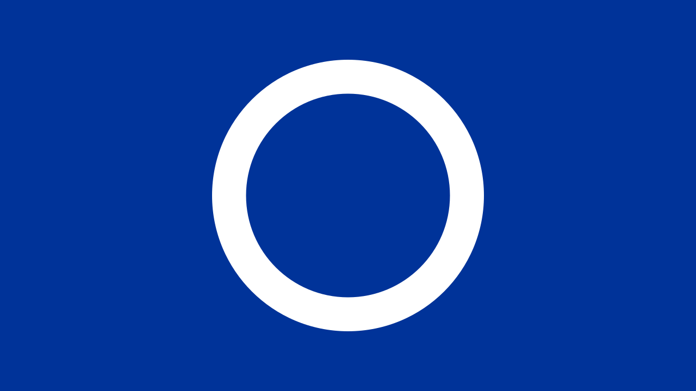
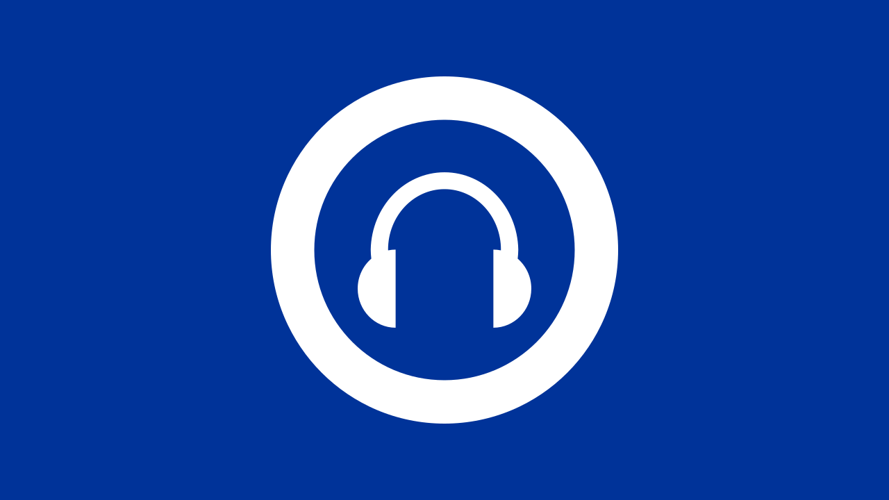

RoguePlanetoid Weekly Update #90
16th February 2026

Last week was an opportunity to see The Best of Tubular Bells I, II & III at The Glasshouse, formerly
known as The Sage, in Gateshead, which was an amazing performance with talented musicians expertly reproducing Mike Oldfield's
music live on stage and was only four rows from the front and could feel the percussion in my chest and back to be immersed in the music
in an unbelievable way. Mike's music means a lot to me as I struggled to find music I liked growing up until I first heard Tubular Bells
and now have every album I can and listen to regularly. I may never see the man himself or hear him play live but this was well and truly the
next best thing! If you want to catch the tour then visit mikeoldfieldofficial.com/tour.
Last week I've been continuing to work on my webinar Podcasting for Professionals
for Sunderland Software City , which has been interesting to do and something
a bit different from my usual presentations on programming although I did do some presentation on podcasting for the business so am looking forward
to doing it next week!
This week I'll be off to record an episode of the Talk with Tech Leaders podcast hosted by Qasim Asghar at Flok
in Middlesborough, it will be good to go back there again as toured the studio over a year ago. It will be great to sit down and chat about things and
hopefully share some insights and maybe stuff I've not mentioned before!
RoguePlanetoid Weekly Update #89
8th February 2026
This week I was at the second Pizzas and Pull Requests event which I wrote about, it was
really interesting to go along to and a chance to catch up with people I know after the New Year, it is always great to be along to events here in the
North East of England and look forward to going to even more this year, it will be a challenge this time around as was able to go to ones during the
day so will have to go to even more in the evening to have a chance of beating the number from last year so look forward to seeing what else I can get
along to this year!
Last week saw the relaunch of this website which was something I had in mind for a long time but only took a few days to put together the refreshed assets
and actually do it! I'm really fond of the new look and pleased I'm getting better at putting together SVGs, I also updated the assets of
Comentsys.com for the header and footer to also be SVGs so is great to be able to put my
limited design skills to the test!
Later this month I'll be doing my first ever non-programming presentation when I do a webinar on Podcasting for Professionals
for Sunderland Software City where I'll go over what podcasting is all about and how
that can fit in a podcast when working for a business or doing a podcast for a business. It also gave me a chance to use my new branding for the presentation
itself, so if you want to learn a little more about podcasting as a professional then get signed up!
RoguePlanetoid Weekly Update #88
1st February 2026
Today sees the launch of a new look for this website which I'm proud to have put together which is not only a cleaner and simpler look
but also reflects the legacy and heritage of my original personal website of CESPage.com
which was something I worked on from 1998 to 2010 so it was great to reintroduce some of the elements from that original website as well
as taking advantage more scalable assets for the iconography using SVG images.
Today also see the first episode of the RoguePlanetoid Podcast of 2026 with Overview of 2025
which covers all the main things I got up to that year, which was a bumper year for events and presentations which as with the previous
year aim to beat with my plans for this year which is a challenge I'm taking on yet again! It was amazing to remember all the things I
did this year and look forward to the things I will be doing this year!
Last week saw my first presentation of the year with Take a Note of UI with .NET 10 which is my most ambitious presentation yet which I first
did down in Manchester and was pleased to be able to do so again here in the North East of England and had fun doing it here with a great local
audience and fantastic questions too! I also have a conference ready version of this talk that I hope to present at conferences this year so will
see if I'm accepted!
RoguePlanetoid Podcast - Episode Thirty Five - Overview of 2025
1st February 2026

Today sees the release of Episode Thirty Five of the RoguePlanetoid Podcast
about Overview of 2025, During 2025 there were more events either attending
or presenting than ever before and renewed as a Microsoft MVP for the first time.
You will find the Podcast where you listen to your podcasts such as Spotify,
Amazon Music, RadioPublic, Apple Podcasts, Pandora,
YouTube Music along with YouTube where you can catch up with previous episodes
and Subscribe or Follow so you don't miss any future Episodes.